二阶导和更高阶导
3. Second derivative二阶导数
简单导数题目计算,考察导数减法法则和幂法则和常量法则
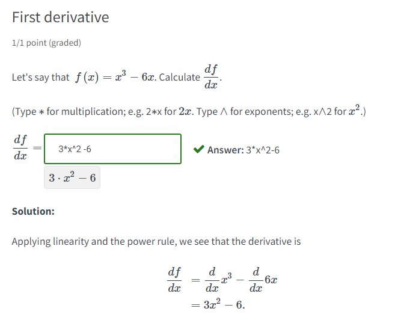 进一步求导数的导数,也就是二阶导
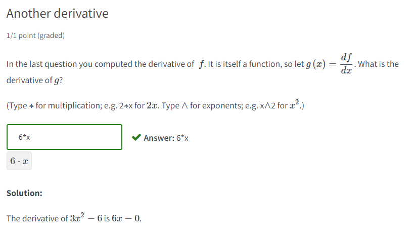
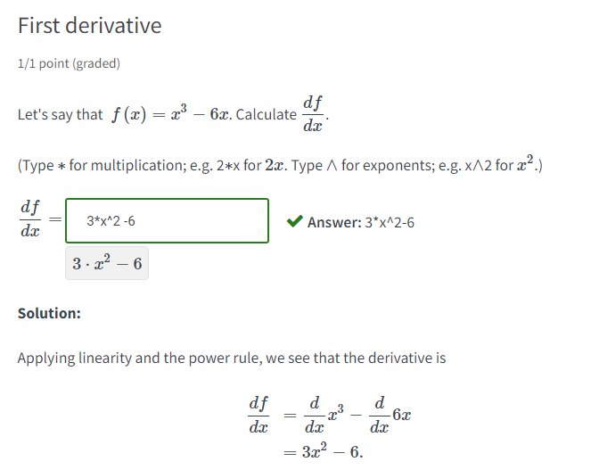 进一步求导数的导数,也就是二阶导
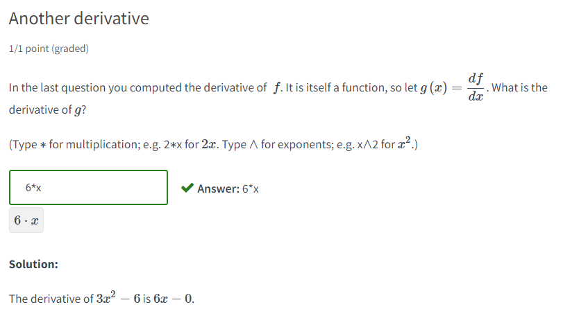
4. Introducing higher derivatives 介绍更高阶的导数
引入符号
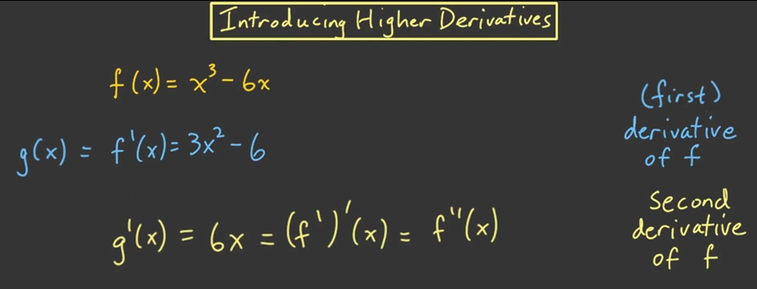 对比莱布尼茨符号的写法
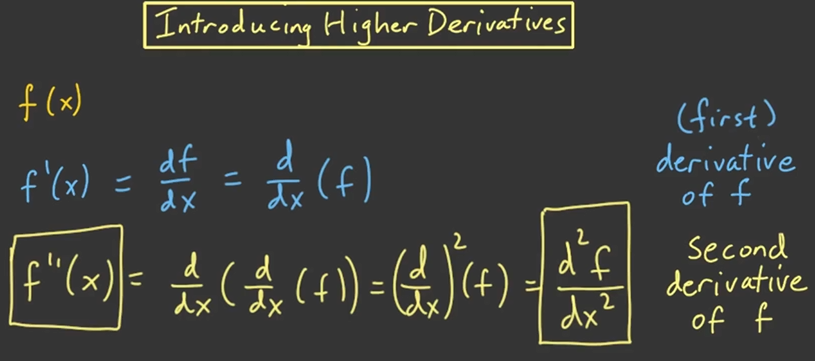 三阶导的写法
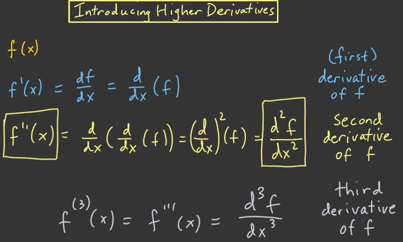
更高阶写法的推断
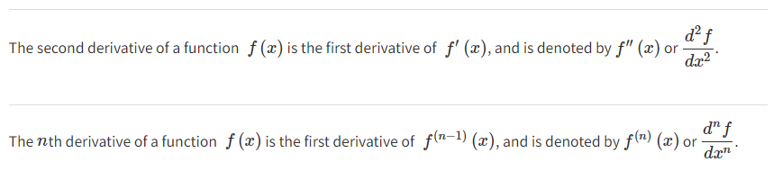
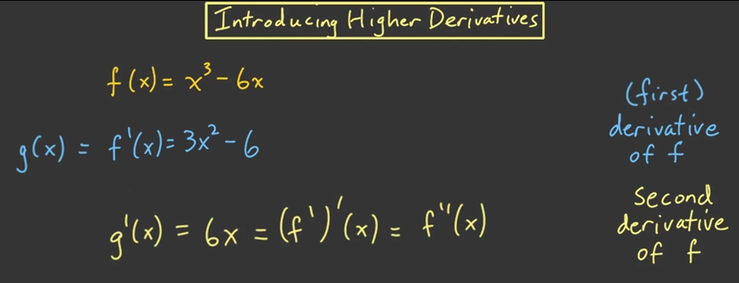 对比莱布尼茨符号的写法
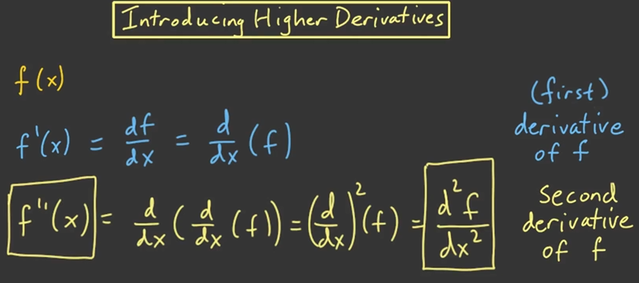 三阶导的写法
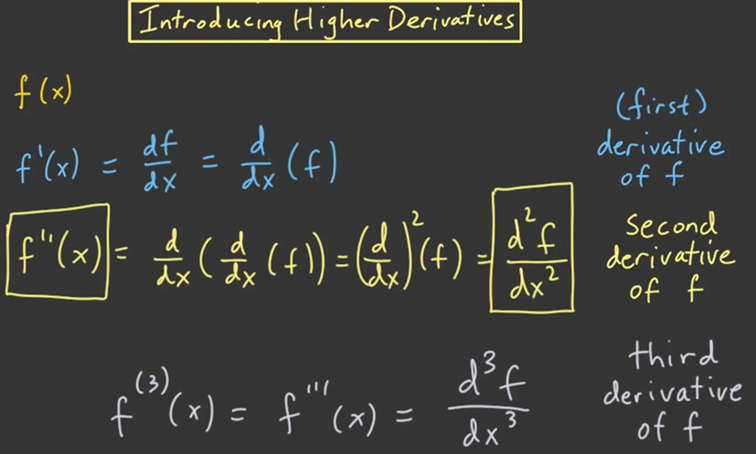
更高阶写法的推断
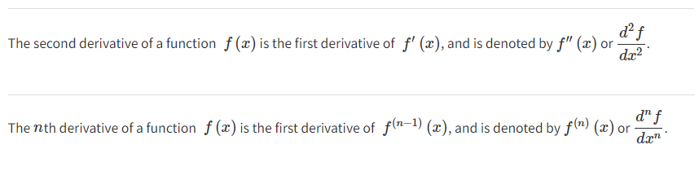
5. A third derivative 一个三阶导
一个三阶导数的计算:
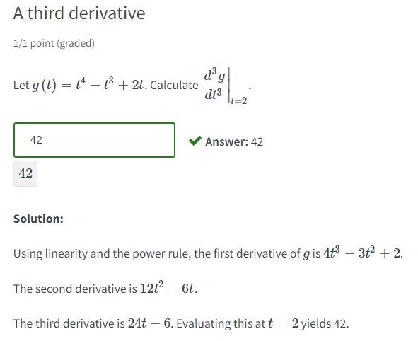 手写计算稿
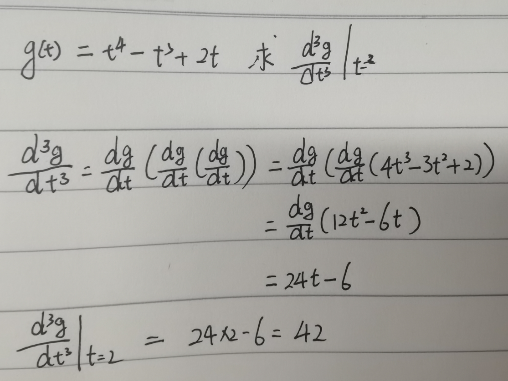
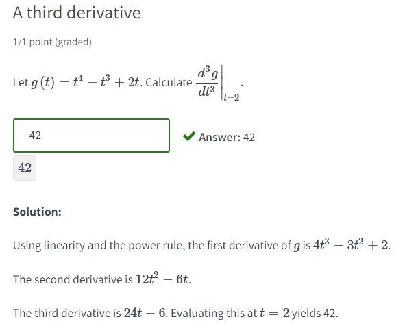 手写计算稿
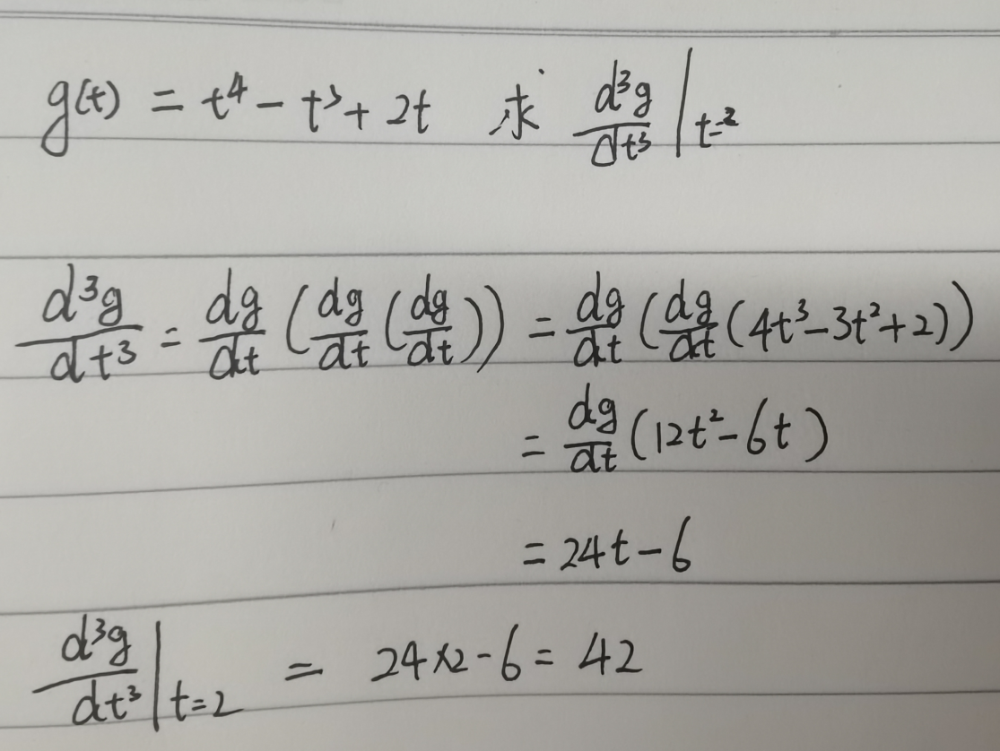
6-9. Second derivative continued 连续二阶导
根据函数图像来了解和导数值的关系
-
第一部分
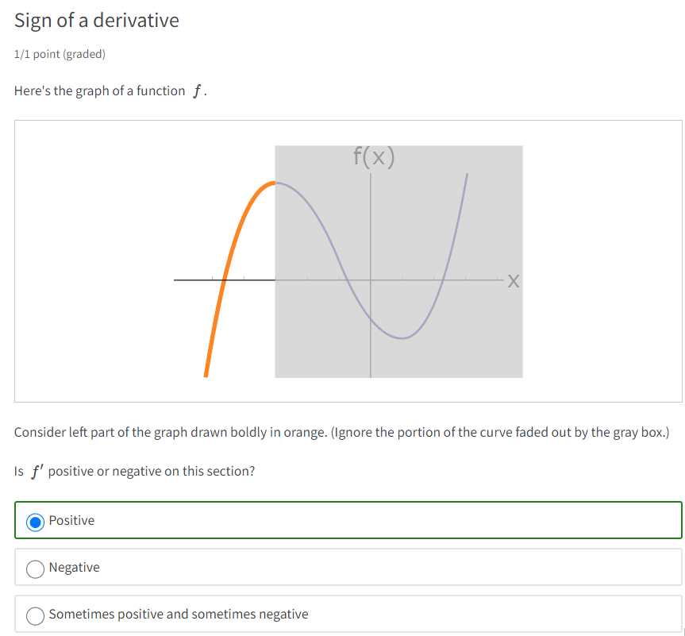 根据函数图像来判断二阶导数
 因为导数值越来越小,所以导数的图像是递减的,斜率为负,那么导数的导数自然就是负的了.
因为导数值越来越小,所以导数的图像是递减的,斜率为负,那么导数的导数自然就是负的了.

根据函数图像估计导数图像
 估计二阶导数的值
估计二阶导数的值
 分析了为什么二阶导数的值为负
分析了为什么二阶导数的值为负
 导数顺时针移动的部分称为Concave Down下凹,对应二阶导小于0
导数顺时针移动的部分称为Concave Down下凹,对应二阶导小于0

-
第二部分
考虑函数的一阶导和二阶导,一阶导切线斜率为负,所以是负值,但是斜率在逐渐升高,所以二阶导值为正
 考虑最后一段,切线的斜率都是正的,所以一阶导和二阶导都是正的.
考虑最后一段,切线的斜率都是正的,所以一阶导和二阶导都是正的.
 一阶导数向下凹,函数逆时针移动,意味着二阶导数大于0
一阶导数向下凹,函数逆时针移动,意味着二阶导数大于0
 通过零阶导(函数)我们获得点的信息,通过一阶导我们获得斜率的信息,通过二阶导我们获得曲线的凹向,知道在切线的哪一边.
通过零阶导(函数)我们获得点的信息,通过一阶导我们获得斜率的信息,通过二阶导我们获得曲线的凹向,知道在切线的哪一边.